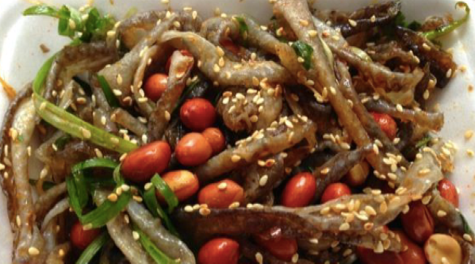
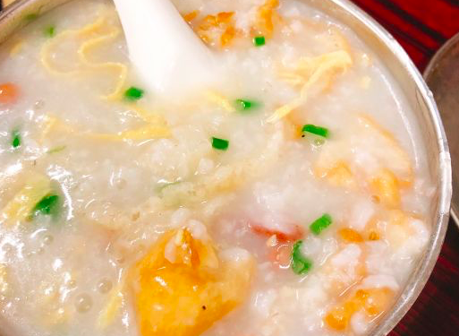
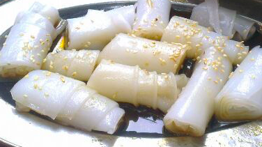
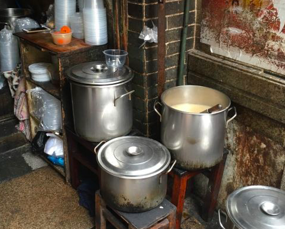
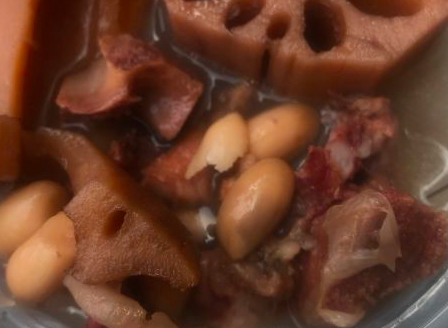
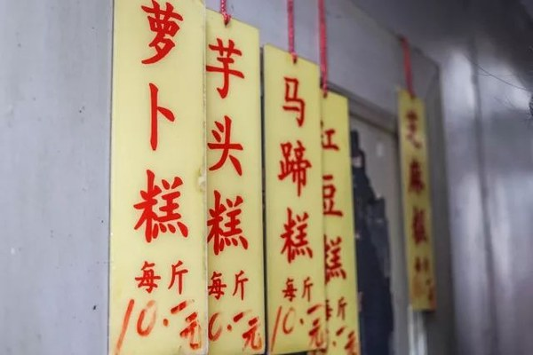
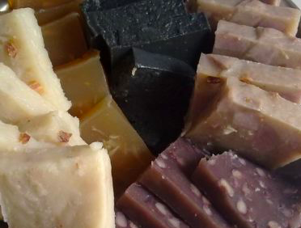
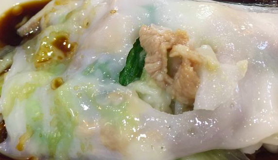
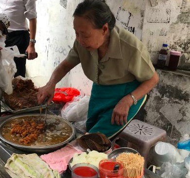
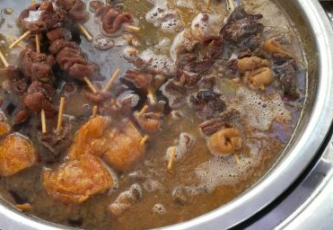

不同于川菜因为过于刺激而难登大雅之堂，粤菜一向是高端宴席的宠儿。 而与此同时，在广东，也总有一些街头小馆，向食客们供应着地道美味。有的甚至没有招牌，还动辄就排队，可见美食之魅力。
下面就介绍几个，只有本地食客才找得到的小店、小摊，口水收好哦。
① 陈添记鱼皮
广东人会吃的一大方面就体现在善用食材，所以有专门做鱼皮的店，一点也不意外呢。
鱼皮这种食材很是挑剔，做不好就会很腥，而陈添记鱼皮就处理得很好。 完全没有鳞片，有葱、姜、香菜、糖等去腥、提鲜的辅料，吃起来鲜香Q弹。不用担心鱼皮口感奇怪，试过绝不会后悔。

除了鱼皮，这家还有两样必吃菜：艇仔粥和豉汁猪肠粉。

艇仔粥稠滑绵软，用料足；肠粉与豉汁完美配合，在唇齿间留下难忘余香。

对啦，一定注意，巷子里有 2 家，最里面那家才是正宗的。
② 禺山路老火汤
在街边非常不起眼的位置， 价格绝对公道，3 元一碗，买不了吃亏和上当。

最常买的是胡萝卜玉米猪骨汤、莲藕排骨汤等，都鲜美异常。绿豆糖水清爽甘甜，也值得一试。

③ 冷巷萝卜糕
如果说上面两家还只是店面难找、偶尔排队这种级别的街头小店，下面这个，可就非常任性了。

这家萝卜糕甚至没有名字，而且每天只卖 1 小时，没开门时食客们就已经排起了长队。
只卖六种口味，都是 10 元一斤，专程去排队买的外地吃货们，不妨就每样来一点尝尝。

④ 银记肠粉
肠粉在全国吃货中的普及率非常高，但要吃正宗的还是得寻根溯源呀。
这家肠粉是布拉式的，也是常年排队。粉皮柔韧清香，酱汁更是独家秘方，好吃的紧，馅料呢也很丰富。

⑤ 阿婆牛杂

这位卖牛杂的阿婆，据说已经八十多高龄，开不开档，取决于她的体力和心情。
吃不吃得到她的牛杂，就要看你的人品了，有时候长长的队伍排起、终于到你时却只剩下汤了。。。
